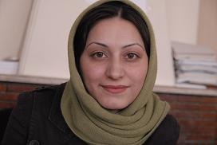

پذيرش > سایت نوشته ها > آیا باید به هر دعوتی پاسخ مثبت داد
 نقدی بر نگاه ابراهیم حاتمی کیا در فیلم دعوت نقدی بر نگاه ابراهیم حاتمی کیا در فیلم دعوت

 آیا باید به هر دعوتی پاسخ مثبت داد آیا باید به هر دعوتی پاسخ مثبت داد
25 آبان 1387 - فریده غائب - نسخه قابل چاپ
"کودکی که در سوسک و کثافت زندگی می کند.در سرمای زمستان می لرزد و در گرمای تابستان عرق می ریزد. کودکی که مدرسه را تا نیمه خوانده و رها کرده و مانند پدر از سر فقر و ناچاری شغل تخلیه چاه و لوله بازکنی را انتخاب می کند."
این آینده ای است که ابراهیم حاتمی کیا برای یک کودک ساخته است. او آینده چهار کودک دیگر را نیز رقم می زند. کودکانی که از شکافهای عمیق نسلی رنج می برند ؛ پدری پنهانی دارند؛ نامشروع هستند و یا درگیر با خیانت اند .
ابراهیم حاتمی کیا در آخرین فیلمش که "دعوت " نام دارد؛ پنج زندگی را به تصویر می کشد که زنانش ناخواسته باردار می شوند و حاتمی کیا هم می گوید این کودکان(جنین ها) فرشته های الهی هستند که به این دنیا دعوت شده اند پس به هر قیمتی شده نباید دست رد بر سینه این دعوت زد . حتي اگر مادر آينده يك زن شصت ساله، يك زن بي شوهر (صيغه اي )، يك زن بازيگر كه فعلا كارش را بيش از فرزند دوست دارد، يك زن آواره در شهري غريب با يك شوهر چاه بازكن يا يك زن بريده ازشوهر باشد .
"آیا باید به هر دعوتی پاسخ مثبت داد؟" از وقتی فیلم دعوت ساخته ابراهیم حاتمی کیا را دیده ام این سوال در ذهنم نقش بسته است. چند روز پیش سعید مدنی ؛ پژوهشگر آسیب های اجتماعی که سال هاست درباره کودکان تحقیق کرده در یک همایش به عنوان اولین سخنران به پشت تریبون می رود تا از واقعیت های کودک آزاری در ایران بگوید. واقعیت، تلخ تر و کوبنده تر از چیزی بود که در ذهن حاضران در جلسه می گذشت.
تصویر کودکی که پشتش با سیگار داغ شده و دخترکی که نیمی از صورتش از سیلی ها ها و کتک های پدرش ، کبود شده تکان دهنده بود.
سوسن شریعتی، جامعه شناس که سخنران دوم است صدایش کمی می لرزد. با دیدن و شنیدن آنچه که بر برخی از کودکان این مرز و بوم اتفاق می افتد جمله اش را اینگونه آغاز می کند:"با دیدن این تصاویر به یاد فیلم "دعوت" افتادم و این سوال که آیا در چنین شرایطی که کودکان مورد خشونت اند و فقر و نا آگاهی بر خشونت علیه آنان دامن می زند باز هم باید این کودکان به دنیا بیایند؟"و من اکنون به پنج کودکی می اندیشم که در فیلم حاتمی کیا سقط نشدند.
شیبلی هاید در کتاب روان شناسی زنان از تحقیقی می نویسد که روی 360 کودک سقط نشده انجام شده است.این تحقیق تا بزرگسالی این کودکان ادامه دارد .نتایج این پژوهش نشان می دهد کودکانی که ناخواسته به دنیا آمده اند نسبت به کودکان دیگر پیشرفت تحصیلی کمتری دارند و بیشتر ترک تحصیل می کنند. همچنین پسران در سن 16 سالگی در این مطالعه احساس می کردند که مادران شان از آنها رضایت خاطر کمتری دارند . گروه مورد مطالعه در اوایل بیست سالگی رضایت شغلی کمتر، تعارض های بیشتر با همکاران و مسئولین خود دارند و روابط دوستانه ای که رضایت بخش باشد نمی توانند داشته باشند.
جز کودکان فیلم دعوت، حاتمی کیا زناني را به تصویر می کشد كه قرار است بدون آمادگي مسئوليت دشوار مادري را بر عهده بگيرند.در این فیلم آقای کارگردان به خواسته این پنج زن اصلا توجهی نکرده است.آیا زنی که آمادگی مادری کردن ندارد می تواند کودکی خوب پرورش دهد؟
جانت شیبلی هاید در بخش سقط جنین کتابش می نویسد:" یک باور عمومی این است که تصمیم گیری درباره سقط جنین و انجام دادن آن، فشار روانشناختی بسیار زیادی به همراه دارد و ممکن است منجر به مشکلات روانشناختی شود اما شواهد نشان می دهد بیشترین فشار پیش از انجام دادن سقط جنین وارد می شود ."
و ادامه می دهد که سقط جنینی که ناخواسته است برای زن احساس رهایی به همراه دارد و هیچ نوع شواهد علمی که حاکی از اثرات منفی سقط جنین بر سلامت روانی باشد وجود ندارد.
به گفته این روان شناس زنانی که جنین ناخواسته شان را سقط کرده اند ؛ تابلوی روانشناختی مثبت تری از لحاظ معیارهایی چون اضطراب و احترام به خود دارند.
اما ظاهرا در ساختار ذهنی پدرسالار آقای کارگردان آنچه مهم نیست خواسته زن و آمادگی اش برای مادری است. او هم همان سیاست هایی را دارد که چند سال پیش رییس جمهوری کشورمان محمود احمدی نژاد علیه کنترل جمعیت داشته و نیز دنباله رو همان سیاستی که سیمای جمهوری اسلامی در سریال های خود آنها را پیگیری می کند.
کانون زنان ایرانی
ارسال به
بالاترین
،
توییتر
،
فریندفید
،
فیسبوک
در همين بخش :
 یک خبر تلخ؟ یک قانونشکنی؟ یک تصمیم بخشنامهای جدید؟ یک خبر تلخ؟ یک قانونشکنی؟ یک تصمیم بخشنامهای جدید؟
چرا بایست به سکسوالیته پرداخت؟ / نفیسه آزاد
آزارجنسی خانگی؛ «قربانی» نه، «نجات یافته»
زنان، بزرگترین بازندگان بهار عرب
سانسور از دیدگاه جنسیتی/الهه امانی
ديگر بخش ها :
طرح یک میلیون امضا
|
مقالات
|
سایت نوشته ها
|
اخبار
|
گزارش كمپين
|
گفت و گو
|
علیه سکوت
|
كوچه به كوچه
|
نامه های شما
|
گزارش ویژه
|
گفتگو با اعضا
|
ویژه سالگرد کمپین
|
تصویر برابری
|
دل آرام علی
|
تریبون
|
مقالات
|
تاریخ شفاهی
|
خارج از چارچوب
|
کتابخانه
|
درباره کمپین
|
کمپین در شهرها
|
کمپین در بند
|
صدای تغییر
|
ویژه 22 خرداد
|
لایحه حمایت از خانواده
|
گالری
|
عشا مومنی
|
امیر یعقوبعلی
|
خدیجه مقدم
|
راحله عسگری زاده و نسیم خسروی
|
پروین اردلان،جلوه جواهری، مریم حسین خواه، ناهید کشاورز
|
زینب پیغمبرزاده
|
سعیده امین، سارا ایمانیان، محبوبه حسین زاده، ناهید کشاورز و همایون نامی
|
احترام شادفر
|
نسیم سرابندی زاده،فاطمه دهدشتی
|
وبلاگ مهمان
|
پرونده خرم آباد
|
دستگیری ها
|
مریم مالک
|
پرستو اللهیاری
|
مهرنوش اعتمادی
|
سمیه رشیدی
|
Other Languages
|
همراهان
|
«فراخوان کمپین ده روز با بهاره هدایت»
| English
|